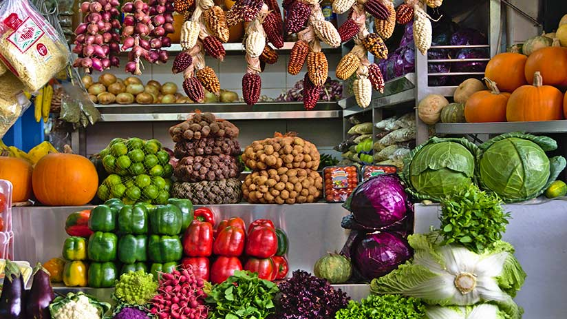
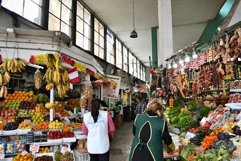

Local Businesses
Central Market in Lima
The central market in Lima, or the Mercado Central, is a popular market located deep in the heart of Lima. This massive multistory market occupies an entire city block and offers a variety of goods and experiences for locals and tourists visiting the capital.Inside the main building,visitors are met with a vibrant food market offering fresh fruits, vegetables, and a variety of meats, poultry, and seafood.

In various food stands, local vendors and cooks will prepare delicious meals. This is a great way to taste authentic Peruvian cuisine. Surrounding the outside of the main building are numerous small stands offering a range of products including clothing, kitchenware, toys, books, and even live animals. The market is open almost all day from 7 am to 9 pm. The central market has a lively atmosphere, and those who love visiting markets and having immersive shopping experiences should visit the Mercado Central.